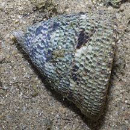
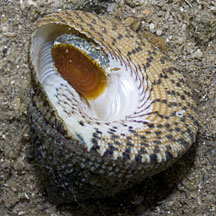
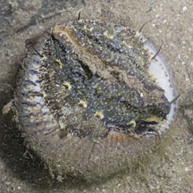
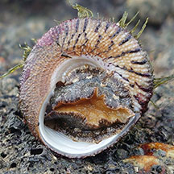
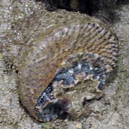
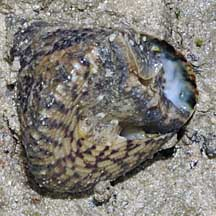

|
|
| shelled snails text index | photo index |
| Phylum Mollusca > Class Gastropoda > Family Trochidae |
| Spotted
top shell snail Trochus maculatus Family Trochidae updated Sep 2020 Where seen? This snail with a conical shell is commonly seen on our Southern shores. On large boulders, rocky shores and artificial sea walls. Usually alone or groups of a few individuals. Elsewhere, they are common in coral reefs and rocky shores. Features: 3-5cm, to 7cm. Shell thick heavy, conical with texture of spiraling thick beads usually hidden under encrusting lifeforms. Underside yellow with a pretty spiral pattern of brown spots. Operculum thin, flexible usually withdrawn deep into the coils of the shell. Body mottled, large foot, edge of the mantle sparsely fringed with long tentacles. A pair of long tentacles at the head. Sometimes confused with the Turban snail (Family Turbinidae) which has a shell with more distinct whorls and a thick, chalky operculum. While many Top snails have a more conical shell and a thin operculum made of a horn-like material. Here's more on how to tell apart turban and top shell snails. |
 Tanah Merah, Sep 13 |
 Tanah Merah, Sep 13 |
 Tanah Merah, Sep 13 |
| Human uses: In Vietnam and the Philippines, it is collected for food and the shell trade |
| Spotted top shell snails on Singapore shores |
On wildsingapore
flickr
|
| Other sightings on Singapore shores |
 Terumbu Selegie, May 24 Photo shared by Richard Kuah on facebook. |
 Terumbu Berkas, Jan 10 |
 Pulau Salu, Aug 10 |
Links
References
|